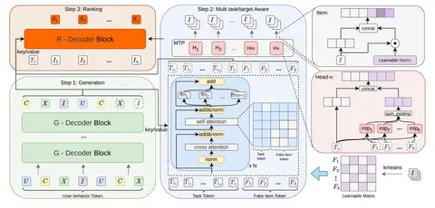

Заключительная часть разбора статьи о том, как в три шага объединить генерацию кандидатов и ранжирование в одной модели. В первом посте разобрали проблематику и первый шаг, во втором — следующий шаг. Сегодня обсудим заключительный шаг, обучение и результаты экспериментов.
Шаг 3. Ранжирование кандидатов
Для ранжирования авторы встраивают специализированный декодер ранжирования (R-Decoder) в общую генеративную архитектуру. Ему на вход поступают токены кандидатов, полученные MTP на шаге 2. В Query авторы добавляют к ним специальный ranking task token Tᵣ. В Key/Value передают представления из обоих предыдущих шагов: базовые интересы пользователя из шага 1 и уточнённые представления из шага 2. Так ранжировщик использует внутреннюю информацию генерации, а не только её результат.
Декодер состоит из одного слоя: сначала cross-attention к Key/Value, затем self-attention. Маска запрещает кандидатам видеть друг друга, но позволяет каждому видеть Tᵣ. Выход каждого кандидата небольшая MLP превращает в скалярный скор.
Обучение
Модель совместно обучается на трёх функциях потерь:
• Lₘₜₚ учит генератор предсказывать правильный код на каждом уровне семантического ID. Для головы бизнес-ценности авторы дополнительно используют семплирование с весом по ценности.
• Lᵣₐₙₖ учит ранжировщик ставить кандидата с большей меткой eCPM выше кандидата с меньшей.
• Lᴅᴄ связывает этапы: скоры ранжировщика превращаются в распределение по текущему набору кандидатов, а генератор учится приближать к нему свои вероятности.
Общая потеря — взвешенная сумма этих трёх частей.
Эксперименты
В офлайн-экспериментах авторы сравнили OneRanker с HSTU и MTP-версией GPR по двум метрикам: HR@K — попадание целевого объекта в топ-K, и NDCG@K — качество порядка объектов в топ-K. Относительно GPR метрика HR@1 выросла с 0,1824 до 0,2639 (+44,7%), а NDCG@5 — с 0,6818 до 0,7904.
В онлайн A/B-тесте OneRanker сравнивали с каскадом из генератора и отдельного ранжировщика. Прирост GMV-Normal снижался по мере выкатки на больший процент трафика:
• +1,34% на 5% трафика,
• +0,64% на 20%,
• +0,35% на 80%.
Авторы показывают снижение эффекта при росте охвата, но не дают его причинного объяснения.
@RecSysChannel
Разбор подготовил
